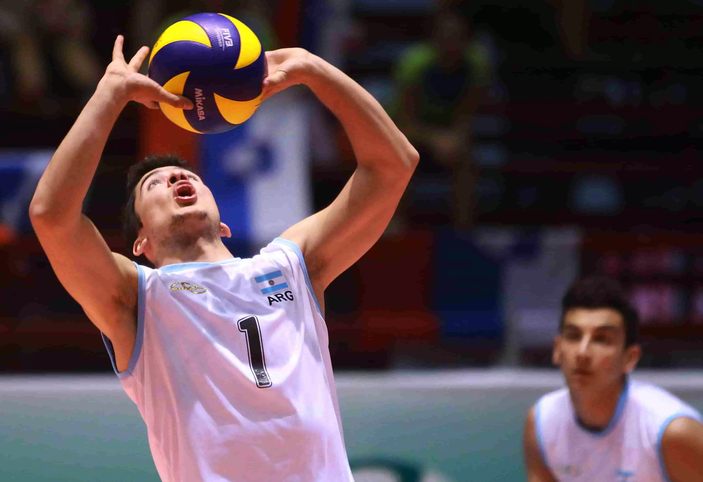
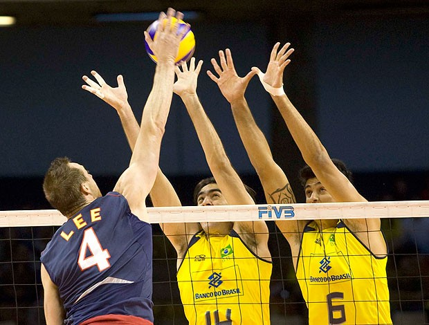

O vôlei é um esporte com menos contato físico entre os jogadores, sendo assim, para deixar o jogo mais empolgante e divertido foram criados 5 fundamentos, sendo eles: saque, ataque, bloqueio, levantamento e recepção.
Esses fundamentos são técnicas que começaram a ser executados nos jogos e acabaram se tornando uma prática do vôlei.
Logo a seguir você poderá aprender mais sobre cada fundamento.

Levantamento
Bloqueio